Background
IBM Storage Insights shows the health and performance of storage systems, but how components connect was spread across tables and isolated views. As the UX designer on this feature, I designed a topology visualisation: one visual map of how hosts, switches, ports, volumes and other components connect.
Problem
Admins had to piece connectivity together from fragmented tables and separate views. Without a clear picture of how data flows from host to storage, root cause analysis was slow and issues were hard to explain to other teams.
Solution
A single end-to-end map from hosts to volumes, with grouped nodes that expand on demand, details in context and performance correlation on the map itself. It supports faster root cause analysis, better performance correlation and smoother day-to-day operations.
Observe
Following IBM Enterprise Design Thinking, we started by gathering what customers were asking for and how they work today.
Customer requirements
Reviewed requests from the Ideas Portal, where customers asked for a visual view of their storage.
User group discussions
Ran UX discovery with users in user group meetings to understand how they troubleshoot.
Synthesis and evaluation
Synthesised the findings, evaluated existing storage workflows and ran a competitive analysis.
Discovery synthesis
With the PM and researcher, I consolidated inputs from the Ideas Portal and user group discussions, then used affinity mapping to group them. Four themes emerged.
End-to-end connectivity
Users struggle to build a mental model of how components connect across layers, and want a continuous, traceable end-to-end view.
Troubleshooting and root cause
Topology views are relied on to narrow down problem areas quickly and to explain issues to other teams.
Visibility gaps in current tools
The data exists today, but fragmentation across views makes correlation slow and mentally heavy.
Exploration expectations
Users expect to explore, pivot and reveal detail progressively, depending on what the investigation needs.
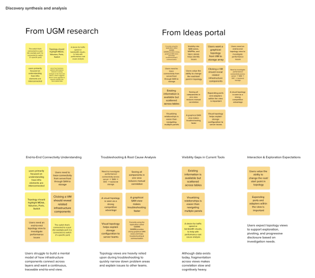
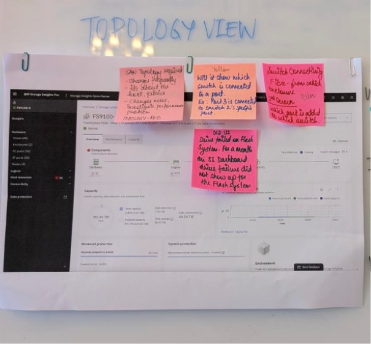
These insights showed why users need a topology view, where today's storage observability falls short, and how topology could support troubleshooting and daily operations.
Competitive analysis
I studied how leading observability platforms visualise topology, looking for patterns that balance relationship clarity, scale and storage depth.
| Datadog | Pure1 | NetApp | Insight | |
|---|---|---|---|---|
| Visualisation | Node-link graph with traffic flow indicators | Sankey-style structured mapping | Structured node-link diagram | Datadog emphasises relationships and flow. Pure1 and NetApp emphasise hierarchy and path clarity. |
| Entities | Services, VMs, network nodes | VMs, hosts, volumes, arrays and host-to-storage mappings | Storage systems, volumes, hosts, SAN paths, ports, controllers | Datadog is strong on cross-entity relationships. Pure1 and NetApp go deeper on storage. |
| Interactivity | Hover metrics and contextual interactions | Expandable mappings with detailed side panels | Drill-down from nodes into metrics and paths | Datadog supports fast scanning. Pure1 and NetApp support deep investigation. |
| Metrics | Flow cues on nodes and edges highlight bottlenecks | Latency on nodes, with IOPS, bandwidth and CPU in a side panel | Inline metrics combined with path context | Datadog enables quick pattern spotting. Pure1 and NetApp enable precise storage analysis. |
| Health and alerts | Clear colour coding for health states | Health indicators within storage context | Health icons and status on nodes | Strong health signals give immediate issue awareness. |
| Ease of understanding | Intuitive view of relationships and flow | Clear flow with performance information | Clarity across hierarchy and flow | Storage users benefit from a structured hierarchy combined with flow cues. |
Scroll sideways on small screens
Direction: combine a structured storage hierarchy with flow cues and strong health signals.
Define
Turning the insights into clear user outcomes, and phasing them.
Hills
I wrote Hills to translate the insights into user outcomes. They aligned stakeholders on what success looks like, guided design exploration, and split the vision into phases. This project focused on Hills 1 and 2.
A storage administrator can easily understand how applications, hosts, SAN and storage components are interconnected, so they can reason about system behaviour and data flow without switching between tools and tables.
A storage administrator can identify bottlenecks and abnormal behaviour by viewing performance metrics in the context of topology and data flow, so they can perform faster, more accurate root cause analysis.
A storage administrator can clearly understand replication relationships and failover paths across storage systems, so they can ensure data resiliency and manage disaster recovery with confidence.
A storage administrator can anticipate the impact of topology or capacity changes through visual simulation, so they can make informed decisions about scaling, optimisation and resource planning.
Make
Co-creating directions with stakeholders, then shaping flows and concepts.
Ideation workshop
I ran a workshop to co-create solution directions with business stakeholders, check our understanding of key use cases, and surface risks, constraints and priorities early.
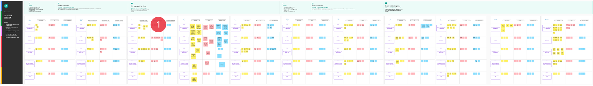
Visualise storage configuration for troubleshooting
A clear, logical map of the infrastructure with health, performance and capacity, showing how components interconnect and supporting monitoring and diagnosis.
Understand app and host-to-storage dependencies
Like use case 1, but mapping applications to infrastructure too, without overwhelming users with the complexity of interconnections.
Detect bottlenecks and single points of failure
Visuals that cut through complexity to highlight bottlenecks and hotspots, correlating alerts, health and performance for faster root cause analysis.
Plan capacity and topology changes
Capacity visible in the topology, with forecasting to balance under- and over-used resources and prepare for future changes.
View replication and failover paths
Not discussed, as it was lower priority.
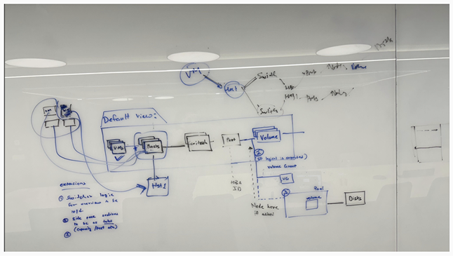
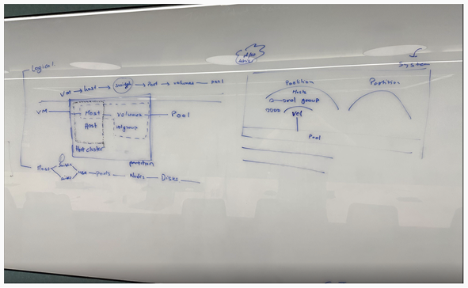
Risks & constraints
The workshop also surfaced four risks the design had to address.
Visual overload
Large environments can produce dense, complex topology views.
Rendering performance
Drawing thousands of nodes and relationships can slow down the interface.
Misreading the data
Users may confuse logical and physical connections.
Missing information
The topology can only show data the monitoring tool collects.
User flows
For the prioritised Hills, I defined an end-to-end flow for investigating storage issues: moving from high-level system context to specific components to understand health, connectivity and performance. Users can enter it three ways.
Host → Switch → Ports → Storage partition → Volume groups → Volumes, grouped for scale
ThroughoutFilters, physical vs logical paths, search, zoom and centre focus
Concept exploration
Before converging on the final flow, I sketched rough concepts for each Hill to explore different ways of solving the problem. This helped identify the key information needed at each step.
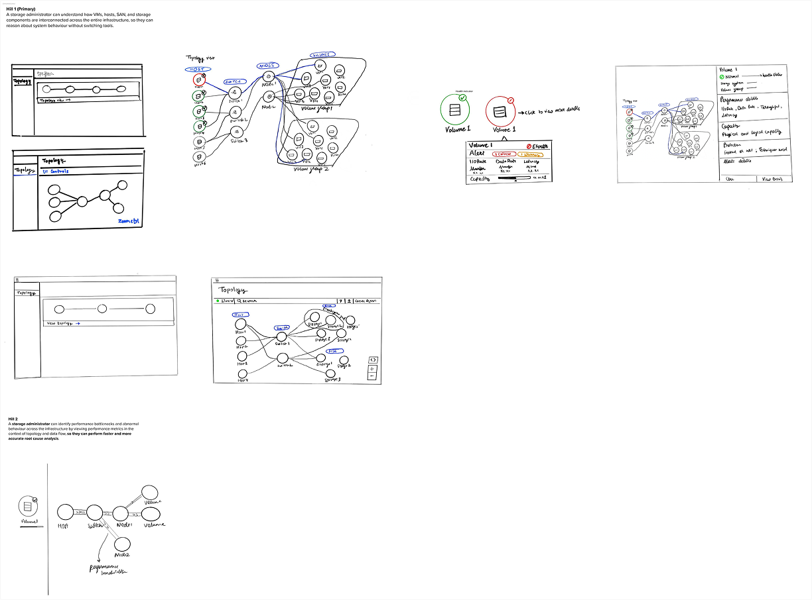
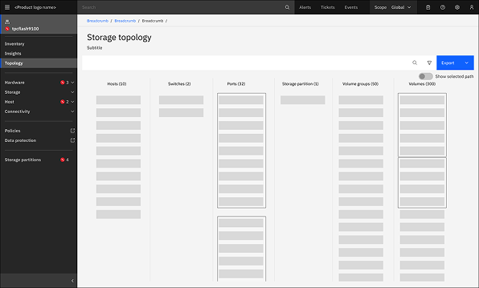
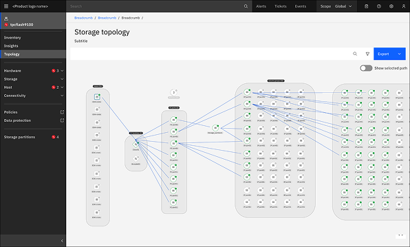
Validate
The designs went through several rounds of feedback with sponsor users, stakeholders and executives.
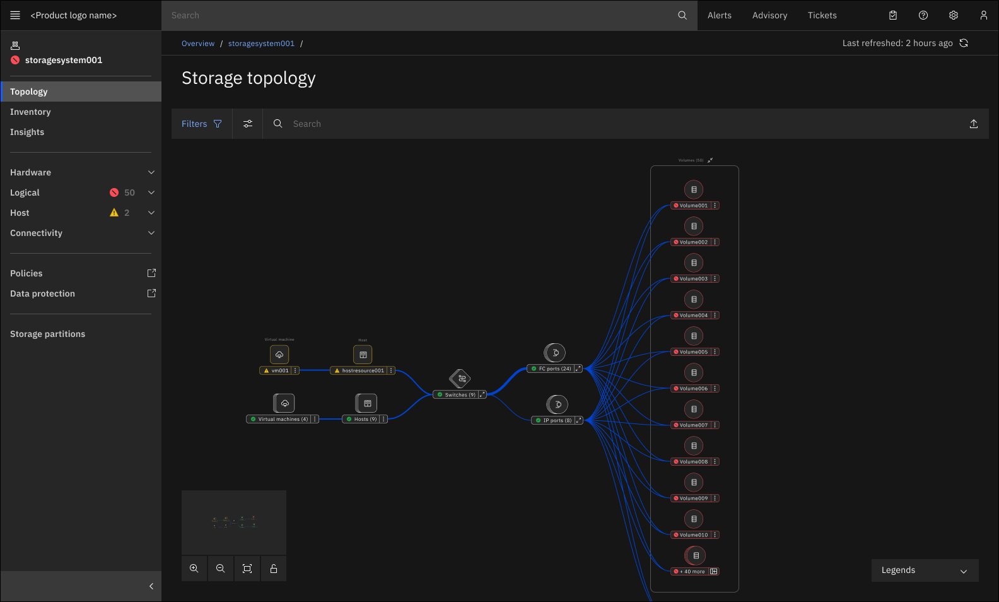
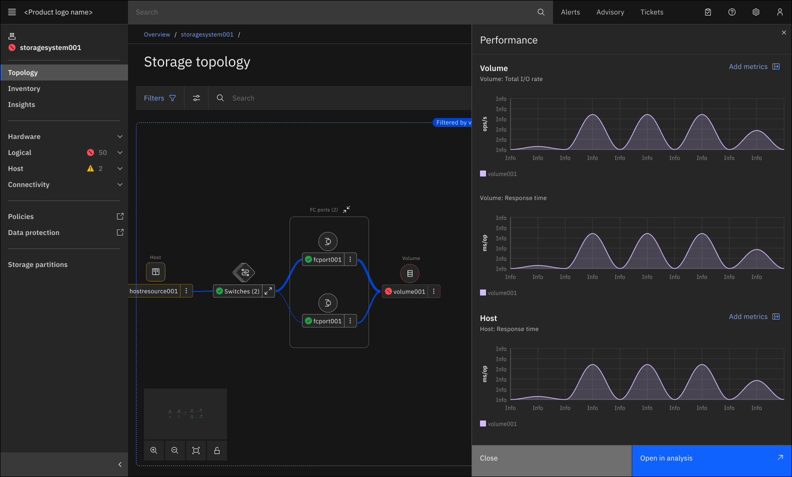
What worked
Feedback was largely positive. Users found the topology view intuitive and valuable for understanding their infrastructure and troubleshooting.
What users asked next
Follow-up questions focused on technical depth:
- “Will the topology overview separate out the HBAs as well?”
- “Can app show connections from a host to multiple flash systems?”
These pointed to a need for deeper system-level visibility and multi-system support. They were out of scope for this release but shaped plans for future iterations.
What users said
“Looks good. Being able to drill down visually is a lot more intuitive than hunting through tables.”Support user
“This view is great for figuring out if the host or application is the issue, or the storage.”Sponsor user
“It will be most useful for performance troubleshooting if we can show host and switch-level performance details.”Sponsor user
Deliver
Final designs, documented for the development team.
Default view
Default topology view
A high-level, end-to-end view of the storage system, from hosts to volumes. It follows the most common investigation path, so users quickly see how data flows across the infrastructure.
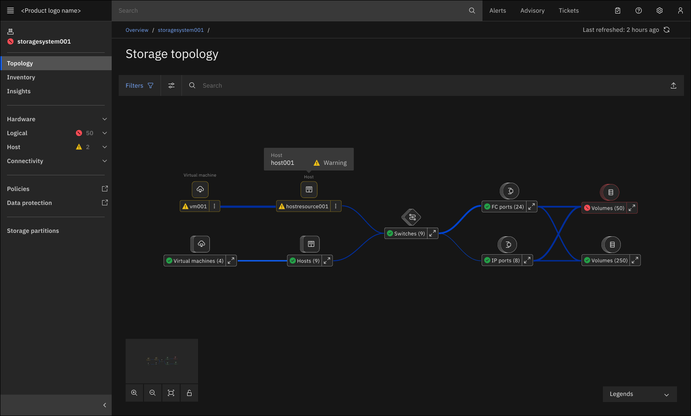
Expand
Node expanded view
Expanding a grouped node lets users drill down into individual components. Here, expanding the volume group with an error reveals every volume inside it.

Details
Contextual details panel
Selecting a node opens a details panel with deeper insight into that component, without leaving the topology.
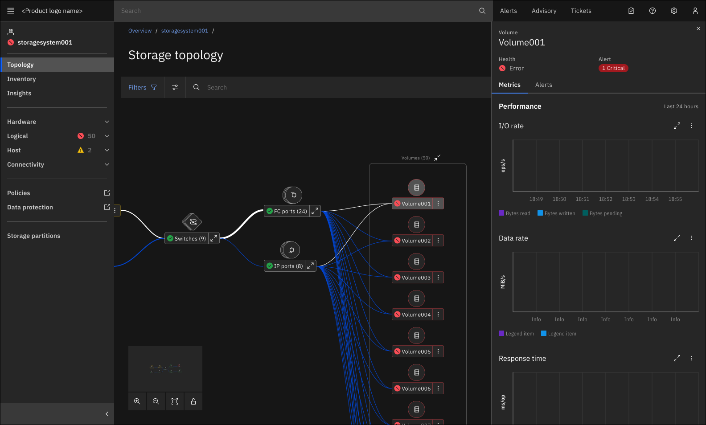
Performance
Performance correlation
Users analyse the selected component alongside its connected components, making bottlenecks and abnormal behaviour faster to spot.
Tooltip
Contextual tooltip
Hovering a component shows a quick summary: health, active alerts, I/O rate, data rate and response time trends, and capacity, without opening anything.
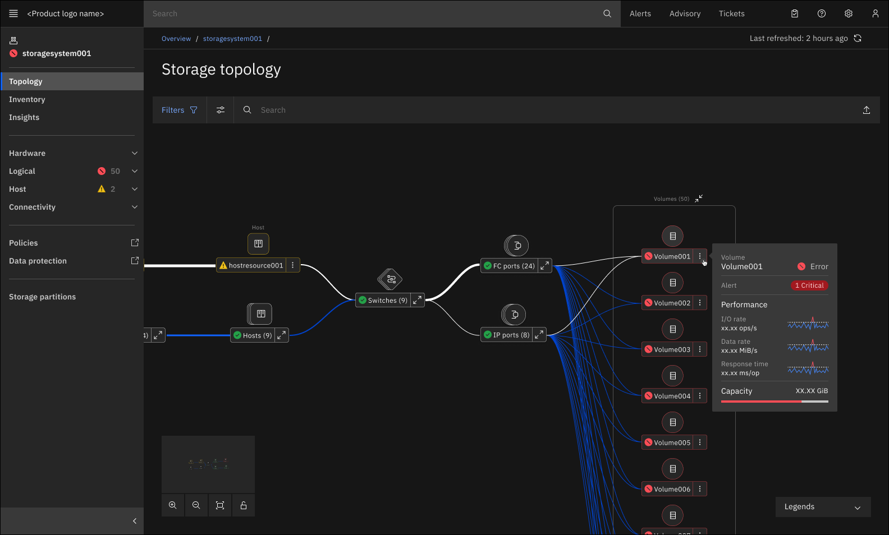
Settings
Customising the view
A settings panel lets users choose which components appear, across hardware, logical, and hosts and connectivity, and reset to the default view at any time.
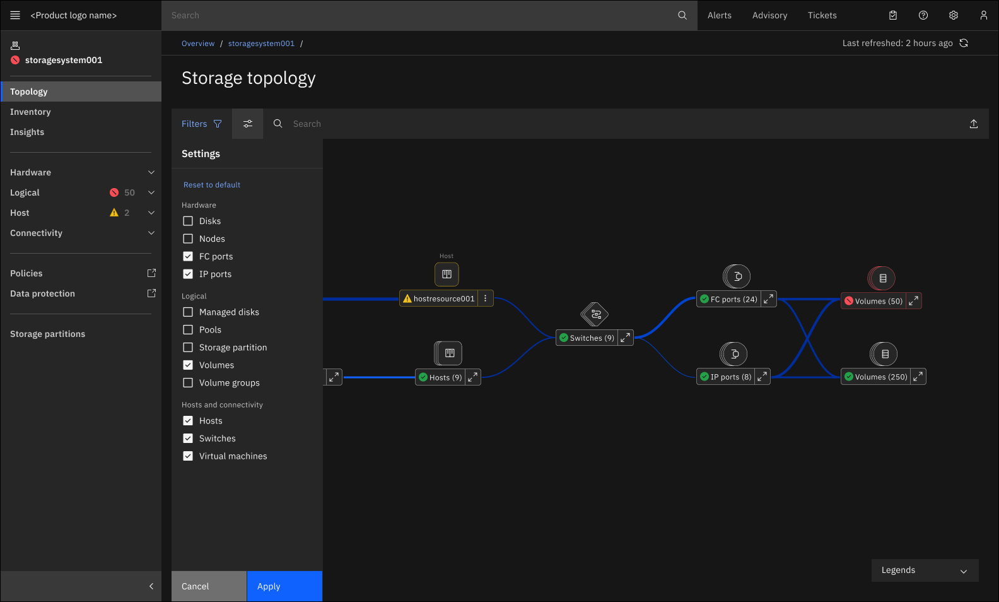
Legends
Legends
Legends explain node shapes, physical vs logical connections and edge width for throughput, so users read the map correctly.
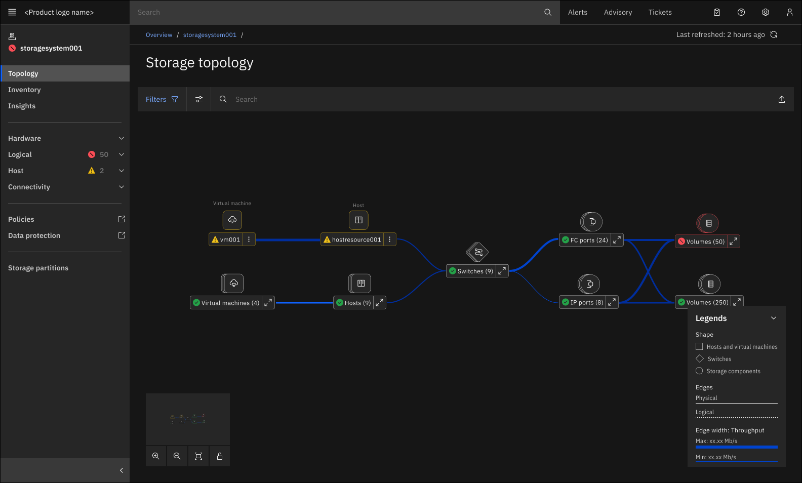
Dev handoff
I documented the final designs for the development team, including interactions for expanding groups, focus path and details, and how the view handles the risks above: large environments, logical vs physical paths and missing data.